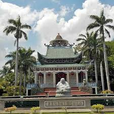
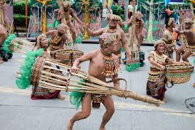
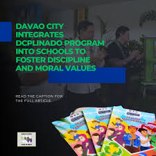

Beliefs and Values of Davao del Sur
Introduction:
The beliefs and values of Davao del Sur are deeply rooted in its indigenous heritage, shaped by centuries of tradition and later influenced by Christianity and other cultural interactions. These beliefs guide daily life, community relationships, and the way people interact with nature and the spiritual world.
Spiritual beliefs in Davao del Sur are a diverse blend of indigenous animism, orthodox religions (Christianity and Islam), and syncretic practices, reflecting a rich cultural tapestry of local tribes and settlers. The province, encompassing areas like Davao City and the surrounding rural areas, is characterized by a strong, shared respect for nature and ancestral spirits.

Spiritual Beliefs
The community and social values of Davao del Sur are deeply rooted in a blend of indigenous heritage, disciplined civic life, and a strong sense of social justice. As a "melting pot" of cultures, the province emphasizes harmony among its diverse population of Christians, Muslims, and various indigenous groups like the Bagobo-Tagabawa and B'laan.

Community and Social Values
Respect for nature in Davao del Sur is deeply rooted in indigenous traditions, particularly among the Bagobo people, who honor ancestral lands, mountains, and biodiversity. This ethos is manifested through eco-tourism in areas like Mount Apo, sustainable agricultural practices, and cultural festivals like Kadayawan that celebrate bountiful, natural harvests

Respect for Nature
Davao del Sur’s cultural identity is a vibrant tapestry woven from indigenous Bagobo-Tagabawa, Blaan, andata traditions, blended with settler influences. Key traditions include intricate abaca weaving (ikat), beadwork, rhythmic music with traditional instruments, and deep spiritual connections to nature, often displayed through harvest festivals and ancestor worship.

Cultural Identity and Tradition
In Davao del Sur, the culture of family and hospitality is rooted in a "melting pot" of indigenous tribes (such as the Bagobo, Manobo, and Kalagan) and settlers, creating a community known for its warmth and strong social bonds. Whether you are visiting the highland resorts of Bansalan or the coastal areas of Digos City, you'll find a deep-seated tradition of welcoming guests like kin.

Family and Hospitality
Moral values in Davao del Sur are deeply rooted in Filipino traditions of family, community, and respect, enhanced by a strong emphasis on professional ethics in governance and education.
